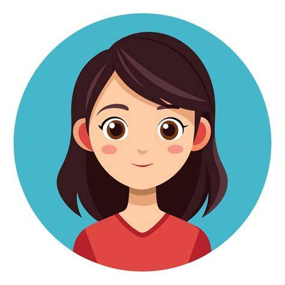
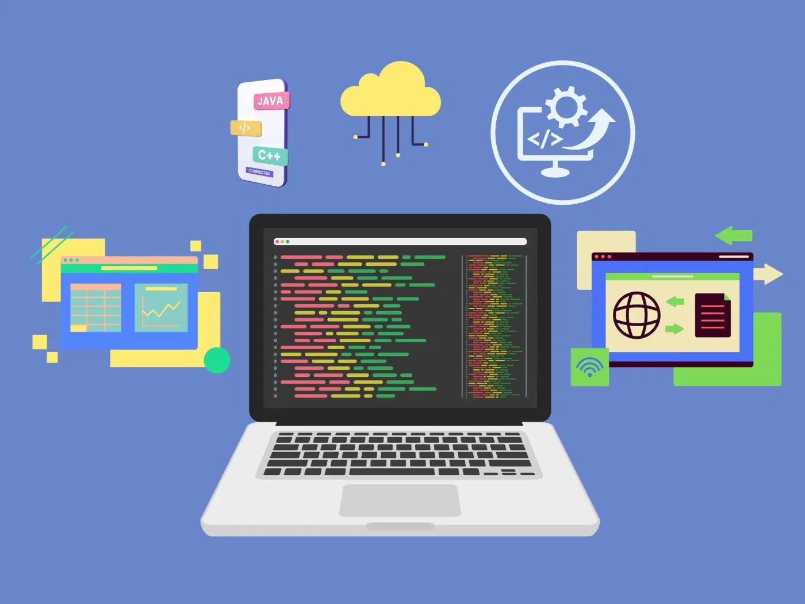
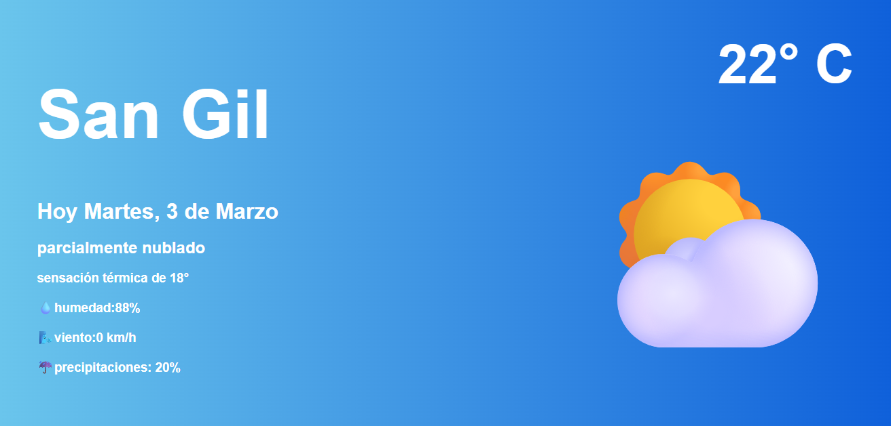
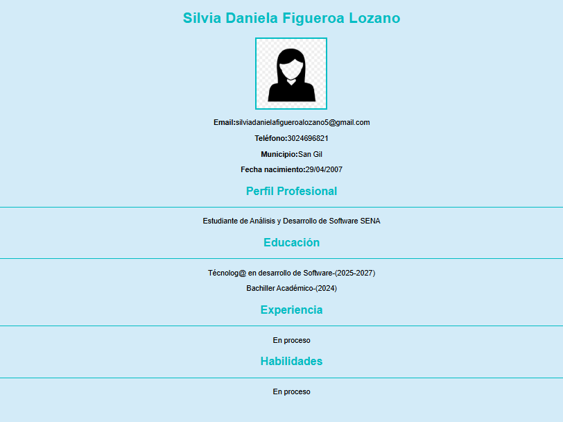
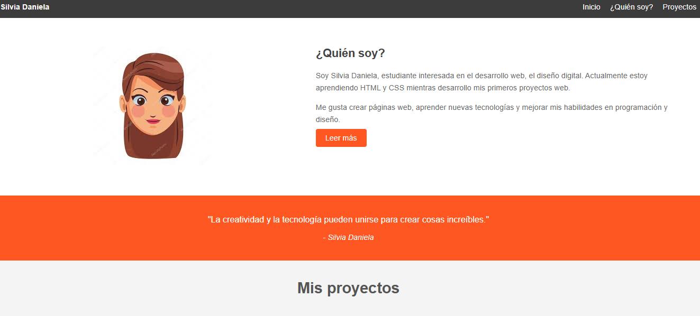

Soy Silvia Daniela, estudiante interesada en el desarrollo web, el diseño digital. Actualmente estoy aprendiendo HTML y CSS mientras desarrollo mis primeros proyectos web.
Me gusta crear páginas web, aprender nuevas tecnologías y mejorar mis habilidades en programación y diseño.
Leer más
La creatividad y la tecnología pueden unirse para crear cosas increíbles. Cuando combinamos imaginación con herramientas digitales podemos construir proyectos que inspiren, resuelvan problemas y transformen ideas en realidad.

Página web básica desarrollada con HTML y CSS, Su objetivo fue aprender la estructura de una página web, el uso de etiquetas principales y la aplicación de estilos para mejorar la presentación visual
Ver proyecto
Widget del clima realizado con HTML y CSS, muestra información como la ciudad, la temperatura y el estado del clima utilizando un diseño visual sencillo
Ver proyecto
Diseño de hoja de vida digital, El objetivo fue organizar información información personal, académica y de habilidades en una página web clara y fácil de leer
Ver proyecto
En este proyecto personal de página web esperimente con diferentes estilos siguiendo un modelo proporcionado, use estilos y elementos con el objetivo de mejorar mis habilidades en CSS
Ver proyecto